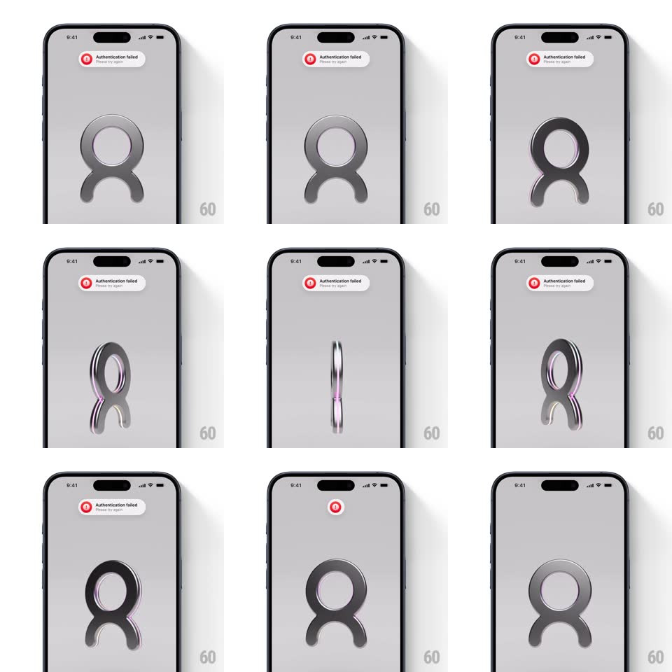

Media
Frame-by-frame

Rebuild this interaction 1:1: Cobot's auth-error toast - the "Authentication failed" pill collapses horizontally into its small red icon and fades out while the metallic 3D logo keeps a slow idle tilt.

Rebuild this interaction 1:1: Cobot's auth-error toast - the "Authentication failed" pill collapses horizontally into its small red icon and fades out while the metallic 3D logo keeps a slow idle tilt. ## Integration Integration: stack-agnostic spec - springs given as stiffness/damping, timed motions as duration + curve; map every value to your framework and animation library of choice. ## Scene Light grey screen: a large metallic 3D loop logo centered; a white toast pill at the top with a red error icon, "Authentication failed", and "Please try again" subcopy. ## Motion spec Pattern: toast collapse to icon, ~600ms. - In: the toast drops from above the safe area (spring ~340/24, 350ms) fully expanded. - Hold: it rests for ~2s; meanwhile the logo idles with a slow 3D tilt (rotateY +-15deg, 6s, ease-in-out, perspective 800px). - Collapse: the toast's text fades and clips (200ms) as the pill shrinks horizontally around the red icon (width to a 28pt circle, 300ms, ease-in-out). - Out: the icon circle fades and scales to 0.6 (250ms). - The logo's idle tilt runs through the whole sequence undisturbed. ## Calibration - The collapse anchors on the icon's leading edge - the icon never moves while the pill shrinks around it. - Text clips inside the pill as it narrows, not before. ## Reduced motion Toast fades out whole. ## Don't miss - The final state is just the red circle for a beat before it fades. - The logo's tilt is ambient - it does not react to the toast.